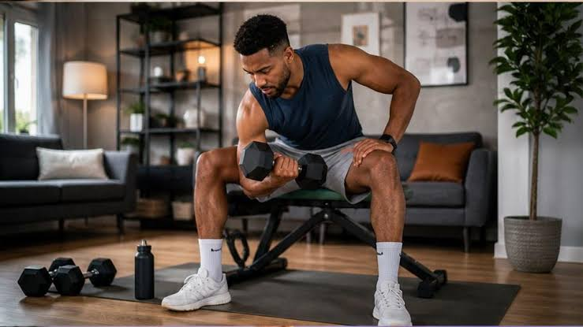

Gym en casa
Publicado el por Jean

En la actualidad, entrenar desde la comodidad del hogar se ha convertido en la mejor alternativa para cuidar de nuestra salud física y mental.
Beneficios de entrenar en el hogar
Entrenar en casa nos regala tiempo valioso durante los días largos de estudio o trabajo.
Aprovecha cada rincón para mantenerte activo sin necesidad de salir.
• Mantener una disciplina diaria mejora tu salud física y mental.
• No requieres de máquinas costosas para iniciar con tu acondicionamiento.
• La constancia en casa es la clave para ver grandes cambios a largo plazo.
"El único entrenamiento malo es el que no se hace."
FitTIPS
Más información sobre rutinas efectivas en Guía de Gym en Casa.